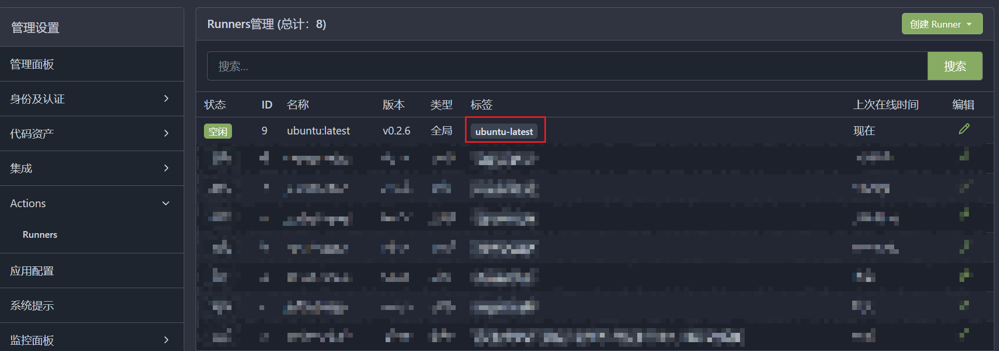

gitea部署手册¶
约束¶
- 已经成功构建了一个
nginx和filebrowser服务器 gitea版本号：1.21.7- 拥有一个代理服务器，用于迁移github上的仓库
创建git用户¶
查看git用户id¶
需要记录1003:1003
注明：用户id:用户组id
实现SSH容器直通¶
在主机上创建 SSH 密钥对。该密钥对将用于向主机验证主机上的 git 用户。
# 非root用户
sudo -u git ssh-keygen -t rsa -b 4096 -C "Gitea Host Key"
# root用户
git ssh-keygen -t rsa -b 4096 -C "Gitea Host Key"
在主机上创建一个名为 /usr/local/bin/gitea 的文件（具有可执行权限）。添加一下内容
ssh -p 2222 -o StrictHostKeyChecking=no git@127.0.0.1 "SSH_ORIGINAL_COMMAND=\"$SSH_ORIGINAL_COMMAND\" $0 $@"
由于此端口不需要暴露给外界，因此可以将其映射到主机的 localhost：
需要将创建的密钥的公共密钥加入到~/git/.ssh/authorized_keys这样才能够完成验证
注意
来自 git 用户的公钥需要“按原样”添加，而通过 Gitea 网络界面添加的所有其他公钥将以 command="/app [...] 作为前缀。
这是详细的说明，当发出 SSH 请求时会发生什么：
- 使用
git用户向主机发出 SSH 请求，例如git clone git@domain:user/repo.git。 - 在
/home/git/.ssh/authorized_keys中，该命令执行/usr/local/bin/gitea脚本。 /usr/local/bin/gitea将 SSH 请求转发到端口 2222，该端口已映射到容器的 SSH 端口（22）。- 由于
/home/git/.ssh/authorized_keys中存在git用户的公钥，因此身份验证主机 → 容器成功，并且 SSH 请求转发到在 docker 容器中运行的 Gitea。
使用PostgreSQL 数据库创建gitea实例¶
version: "3.8"
networks:
gitea:
external: false
volumes:
gitea:
driver: local
postgres:
driver: local
services:
server:
image: gitea/gitea:1.21.7
container_name: gitea
environment:
- USER_UID=1003
- USER_GID=1003
- GITEA__database__DB_TYPE=postgres
- GITEA__database__HOST=db:5432
- GITEA__database__NAME=gitea
- GITEA__database__USER=gitea
- GITEA__database__PASSWD=gitea
restart: always
networks:
- gitea
volumes:
- gitea:/data
- /home/git/.ssh/:/data/git/.ssh
- /etc/timezone:/etc/timezone:ro
- /etc/localtime:/etc/localtime:ro
ports:
- "3000:3000"
- "127.0.0.1:2222:22"
depends_on:
- db
db:
image: postgres:14
restart: always
environment:
- POSTGRES_USER=gitea
- POSTGRES_PASSWORD=gitea
- POSTGRES_DB=gitea
networks:
- gitea
volumes:
- postgres:/var/lib/postgresql/data
nginx反向代理,配置域名配置https¶
app.ini文件配置
nginx.conf文件配置
server {
listen 80;
server_name gitea.*.ltd;
location / {
proxy_pass http://172.17.0.1:3000;
proxy_set_header Host $host;
proxy_set_header X-Real-IP $remote_addr;
proxy_set_header X-Forwarded-For $proxy_add_x_forwarded_for;
proxy_set_header X-Forwarded-Proto $scheme;
}
}
配置代理¶
Docker安装Squid代理服务 - 知乎 (zhihu.com)
gitea配置全局代理用于镜像github源-阿里云开发者社区 (aliyun.com)
修改app.ini文件
服务配置¶
配置app.ini以满足一些个性需求
限制所有仓库只有登录后才能访问
关闭gitea的注册功能
配置actions¶
配置act_runner¶
拉取镜像¶
生成配置文件¶
docker run --entrypoint="" --rm -it gitea/act_runner:latest act_runner generate-config > config.yaml
通过docker-compose.yml启动act_runner容器¶
version: "3.8"
services:
runner:
image: gitea/act_runner:nightly
environment:
CONFIG_FILE: /config.yaml
GITEA_INSTANCE_URL: "${INSTANCE_URL}"
GITEA_RUNNER_REGISTRATION_TOKEN: "${REGISTRATION_TOKEN}"
GITEA_RUNNER_NAME: "${RUNNER_NAME}"
GITEA_RUNNER_LABELS: "${RUNNER_LABELS}"
volumes:
- ./config.yaml:/config.yaml
- ./data:/data
- /var/run/docker.sock:/var/run/docker.sock
INSTANCE_URL为gitea实例的url/ip地址REGISTRATION_TOKEN为创建token(来自gitea实例)RUNNER_NAME为该runner名称(可自定义)RUNNER_LABELS为创建的镜像来源(不可自定义)
小贴士
RUNNER_LABELS实例: ubuntu-latest:docker://node:16-bullseye
ubuntu-latest为红框标注

//node:16-bullseye为actions脚本启动的镜像来源
可以指定多个使用,分割